TreeviewCopyright © aleen42 all right reserved, powered by aleen42
Chapter 4: 快排及随机化算法
1. 快速排序
- 由C.A.R. Hoare于1962年提出.
- 分治算法（Divide-and-conquer algorithm）.
- “in place”排序 (像插入（insertion）排序，但不像归并（merge）排序).
- 非常实用(与调谐tuning).
2. 分治（Divide and conquer）
快速排序一个"n-元素"的数组:
Divide: 将数组围绕一个主x(pivot x)划分为两个子数组，使下子数组中的元素≤x≤上子数组中的元素 。
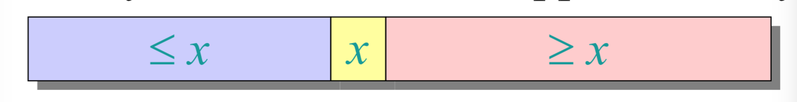
- Conquer: 递归地对两个子数组排序。
- Combine: 一些简单工作。
Key:线性时间分区子程序
3. 分区子程序（Partitioning subroutine）
分区子程序伪代码
PARTITION(A,p,q) ⊳ A[p..q]
x ← A[p] ⊳ pivot = A[p]
i←p
for j ← p + 1 to q
do if A[j] ≤ x
then i←i+1
exchange A[i] ↔ A[j]
exchange A[p] ↔ A[i]
return i
不变式（Invariant）:
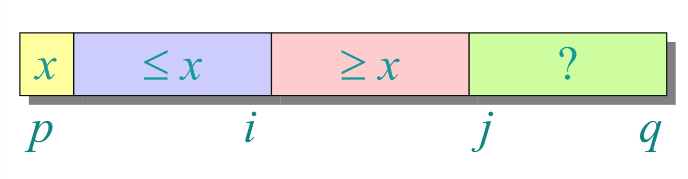
分区过程示例
A=[6,10,13,5,8,3,2,11],p=1,q=8 ,x=A[1]=6,i=1.
- step1:i=1,j=2
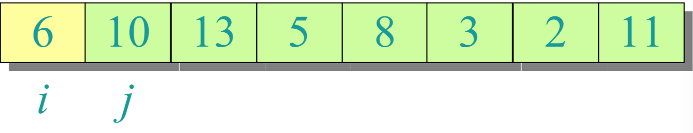
- step2: A[j]=10>x, go(j+1)
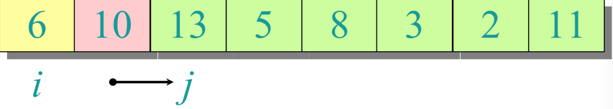
- step3: j=3,A[j]=13 > x; go(j+1)</br>
j=4,A[j]=5 ≤ x; do(i=i+1=2),A[2] ↔ A[4]
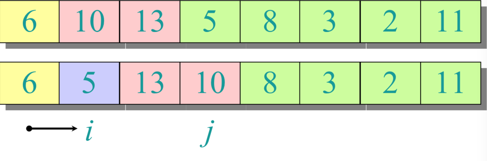
- step4: i=2,j=4; go(j+1)
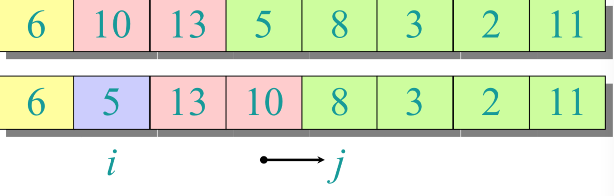
- step5: j=5,A[j]=8 > x; go(j+1)
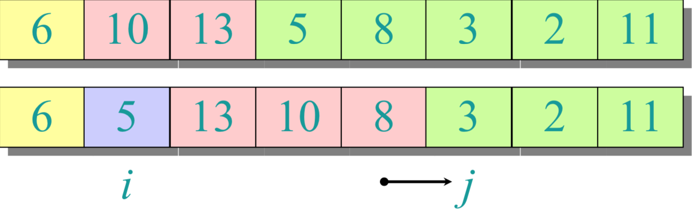
- step6: j=6,A[j]=3 ≤ x; do(i=i+1=3),A[3] ↔ A[6]
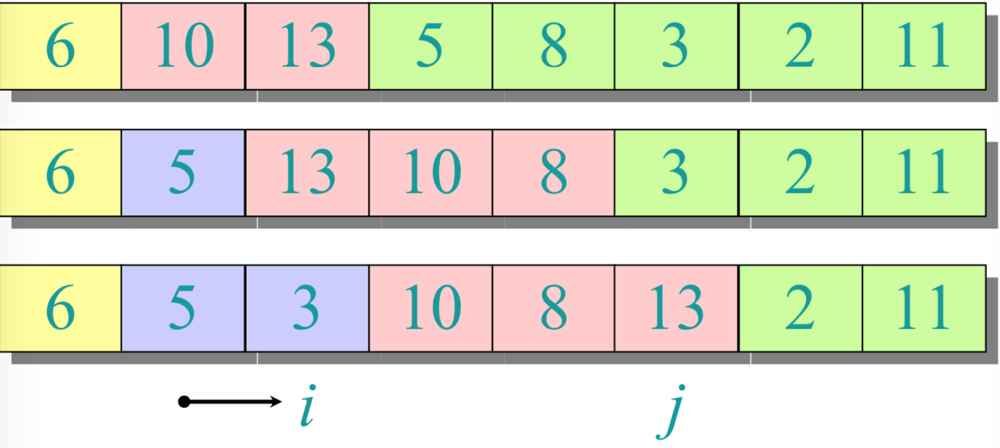
- step7: i=3,j=6; go(j+1)
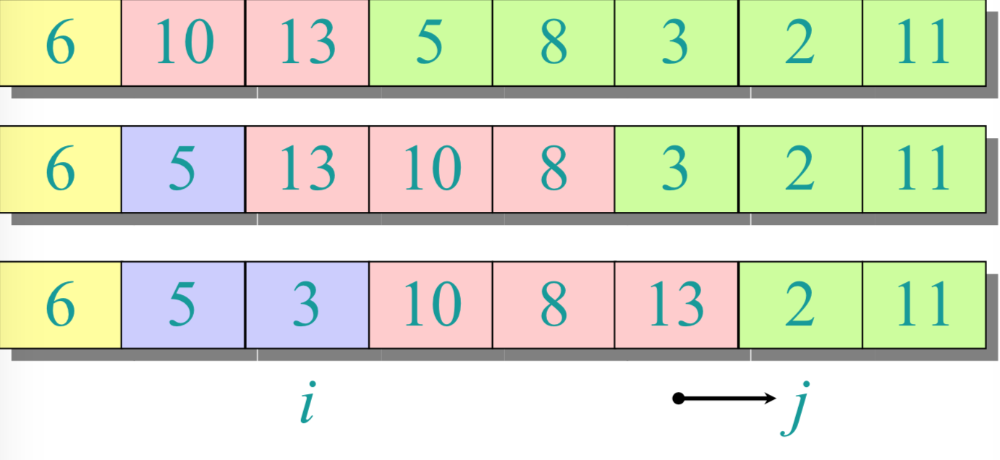
- step8: j=7,A[j]=2 ≤ x; do(i=i+1=4),A[4] ↔ A[7]
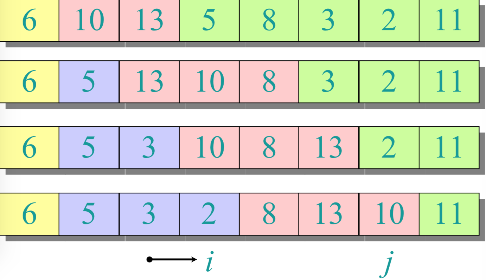
- step9: i=4,j=7; go(j+1)
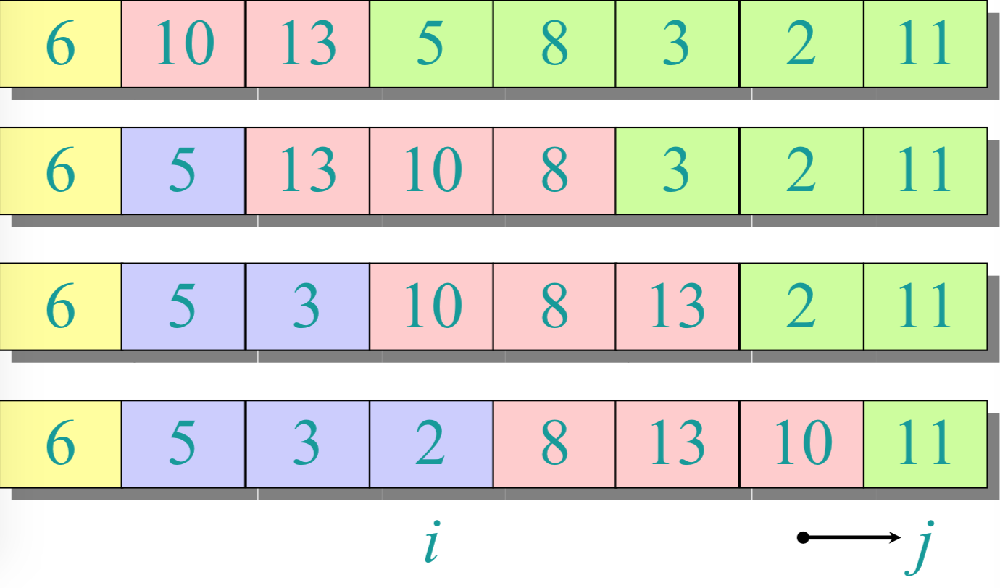
- step10: j=8,A[j] > x; go(j+1)
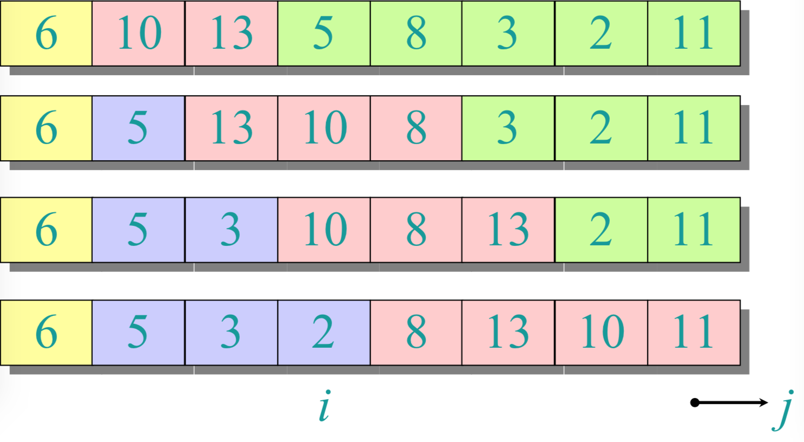
- step11: j+1>q,for循环end. p=1,i=4,A[p] ↔ A[i].return i.
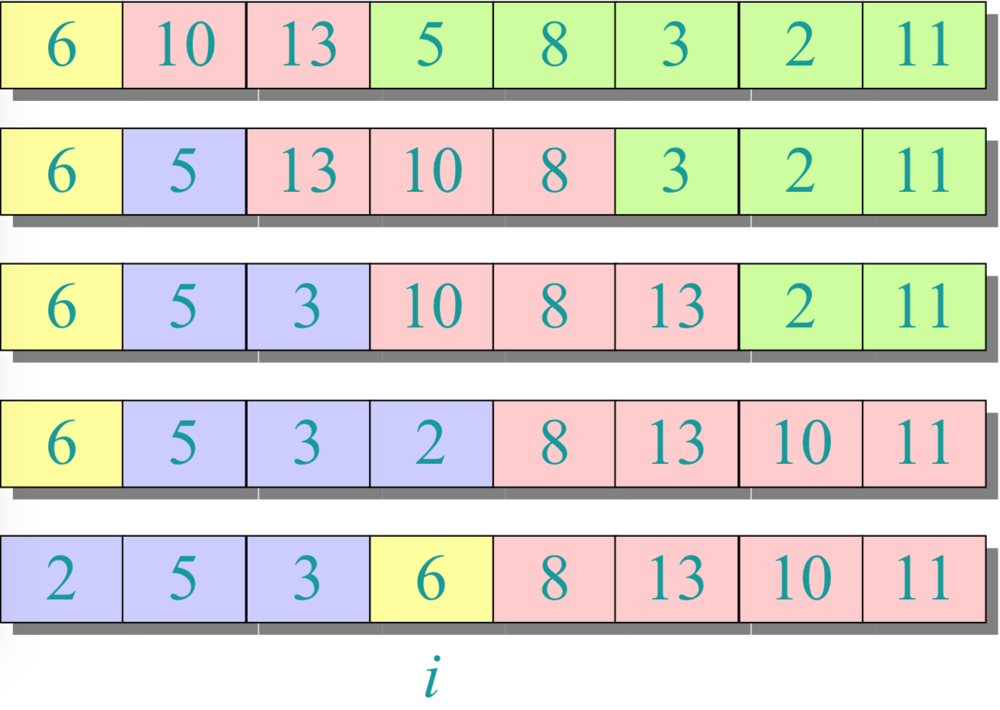
4. 快排算法伪代码
QUICKSORT(A, p, r)
if p < r
then q ← PARTITION(A, p, r)
QUICKSORT(A, p, q–1)
QUICKSORT(A, q+1, r)
初始调用:QUICKSORT(A, 1, n)
5. 分析快排算法
- 假设所有的输入元素都是不同的。
- 在实践中，有更好的分区算法来处理可能存在重复输入元素的情况。
- 设T(n) = n个元素的数组的最坏情况运行时间。
6 快排的最坏情况
- 输入已排序或反向排序。
- 围绕最小或最大元素划分。
- 分区的一边总是没有元素
T(n)=T(0)+T(n−1)θ(n)=θ(1)+T(n−1)+θ(n)=T(n−1)+θ(n)=θ(n2)
(arithmetic series:算术级数)
7 递归树最坏情况
T(n) = T(0) + T(n–1) + cn
T(n)
graph TD
A[cn] --> B["T(0)"]
A --> C["c(n-1)"]
C -->D["T(0)"]
C -->E["T(n-2)"]
graph TD
A[cn] --> B["T(0)"]
A --> C["c(n-1)"]
C -->D["T(0)"]
C -->E["c(n-2)"]
E -->F["T(0)"]
E -->G[" "]
G -.->H["θ(1)"]
8. 最好情况分析
- 如果幸运的话，PARTITION会将数组平均分割:
T(n)=2T(n/2)+θ(n)=θ(nlgn)
(和 merge sort 一样)
- 如果分割总是 101:109 ?
T(n)=T(101n)+T(109n)+θ(n)
这个递归式的解是什么?
9. Analysis of “almost-best” case
10. More intuition
假设我们轮流选择幸运，不幸，幸运，不幸，幸运，....
{L(n)=2U(n/2)+θ(n)U(n)=L(n−1)+θ(n)luckyunlucky
Solving:
L(n)=2(L(n/2−1)+θ(n/2))+θ(n)=2L(n/2−1)+θ(n)=θ(nlgn)
lucky!
我们怎样才能确定我们通常是幸运的呢?
11. 随机快排
IDEA:围绕一个随机元素进行划分。
- 运行时间与输入无关秩序。
- 不需要对输入分布做任何假设。
- 没有特定的输入引出最坏情况的行为。
- 最坏的情况仅由随机数生成器的输出决定。
12. 随机快排分析
设T(n) = 输入规模为n的随机快速排序运行时间的随机变量，假设随机数是独立的。
For k = 0, 1, ..., n–1, 定义标志随机变量
xk={10if PARTITION generates a k:n–k–1 split,其他
E[xk]=Pr{xk=1}=1/n,因为所有的分割都是相等的，假设元素是不同的.
T(n)=⎩⎪⎪⎪⎨⎪⎪⎪⎧T(0)+T(n−1)+θ(n)T(1)+T(n−2)+θ(n)⋮T(n−1)+T(0)+θ(n)if 0:n-1 split,if 1:n-2 split,if n-1,0 split.=k=0∑n−1Xk(T(k)+T(n−k−1)+θ(n))
13. 计算期望值（Calculating expectation）
两边都取期望值：
E[T(n)]=E[k=0∑n−1Xk(T(k)+T(n−k−1)+θ(n))]=k=0∑n−1E[Xk(T(k)+T(n−k−1)+θ(n))]=k=0∑n−1E[Xk]⋅E[T(k)+T(n−k−1)+θ(n)]
- 线性期望
- Xk与其他随机选择相互独立
E[T(n)]=E[k=0∑n−1Xk(T(k)+T(n−k−1)+θ(n))]=k=0∑n−1E[Xk(T(k)+T(n−k−1)+θ(n))]=k=0∑n−1E[Xk]⋅E[T(k)+T(n−k−1)+θ(n)]=n1k=0∑n−1E[T(k)]+n1k=0∑n−1E[T(n−k−1)]+n1k=0∑n−1θ(n)
线性的期望;E[Xk]=1/n
E[T(n)]=E[k=0∑n−1Xk(T(k)+T(n−k−1)+θ(n))]=k=0∑n−1E[Xk(T(k)+T(n−k−1)+θ(n))]=k=0∑n−1E[Xk]⋅E[T(k)+T(n−k−1)+θ(n)]=n1k=0∑n−1E[T(k)]+n1k=0∑n−1E[T(n−k−1)]+n1k=0∑n−1θ(n)=n2k=1∑n−1E[T(k)]+θ(n)
求和有相同的项
1. Hairy recurrence
E[T(n)]=n2k=2∑n−1E[T(k)]+θ(n)
(K=0,1项可以被放到（absorbed）θ(n)里)
Prove: E[T(n)]≤anlgn 对于常量a>0
选择足够大的a，使得对于足够小的n>=2,algn占E[T(n)]的主导地位.
(Choose a large enough so that a n lg n
dominates E[T(n)] for sufficiently small n ≥ 2)
Use fact:
∑k=2n−1klgk≥21n2lgn−81n2
2. Substitution method
14. 实践中的快速排序（Quicksort in practice）
- Quicksort是一个伟大的通用排序算法。
- 快速排序通常比归并排序快两倍以上。
- 快速排序可以从代码优化中获益良多。
- 即使使用缓存和虚拟内存，快速排序也能很好地运行。